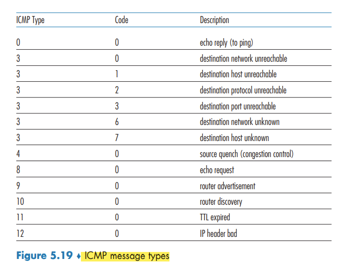

ICMP The Internet Control Message Protocol
ICMP: The Internet Control Message Protocol
used by hosts and routers to communicate network-layer information to each other. The most typical use of ICMP is for error reporting.
ICMP is often considered part of IP, but architecturally it lies just above IP, as ICMP messages are carried inside IP datagrams, as IP payload,
CMP messages have a type and a code field, and contain the header and the first 8 bytes of the IP datagram that caused the ICMP message to be generated in the first place (so that the sender can determine the datagram that caused the error).

Traceroute program, which allows us to trace a route from a host to any other host in the world. implemented with ICMP messages. Each of these datagrams carries a UDP segment with an unlikely UDP port number. The first of these datagrams has a TTL of 1, the second of 2, the third of 3, and so on.
A new version of ICMP has been defined for IPv6 added new types and codes required by the new IPv6 functionality. These include the “Packet Too Big” type and an “unrecognized IPv6 options” error code.